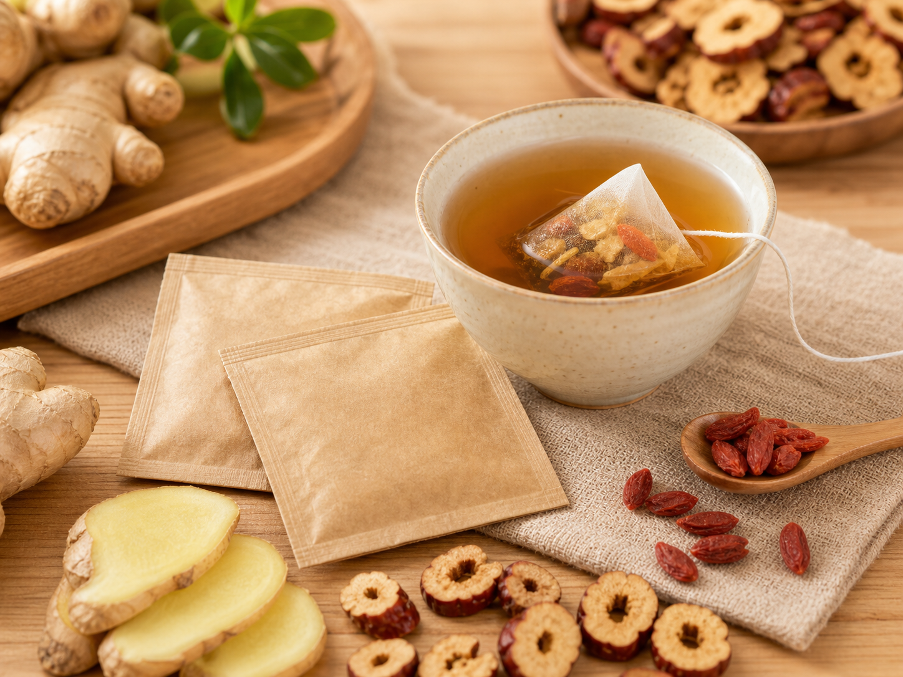

Buying intent
Specific product need
The page targets users already comparing a type of tea bag, not casual readers.

This product theme focuses on ginger-forward tea bags, warm flavor notes, and after-meal routines without making health claims.
Product theme pages sit between a category page and a buying guide. They can later carry product cards, comparison tables, FAQ, and affiliate links.
The page targets users already comparing a type of tea bag, not casual readers.
Recommended products can be added without changing the URL or navigation.
Each product page should link to related use scenarios and buying guides.
Ginger herbal tea bags for warm, stronger flavor. is a commercial support page kept in the active sitemap because it helps visitors complete a main task on this site. Compare ginger herbal tea bags by warmth, flavor strength, ingredient order, and use case.
Data anchor: This core page supports https://www.teabagguide.com by linking a main user question to the related tool, guide, product, or report path.